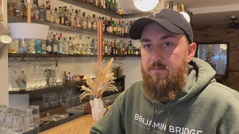

Soyboys Boycott White Lobsters
A followup to his previous article by Northpoint.
CBC:
Well here comes the boycotts of the White man's lobster.
TDC_ARTICLE_START
Kourosh Rad
Kourosh Rad removed three items from his menu, including the lobster mac and cheese, lobster sliders and a lobster sandwich.
The items are still listed but with a note: "Currently not offering lobster due to violation of Mi'kmaq's treaty rights."
Rad said he had never considered where the restaurant's supplier acquired its lobster, but he's now looking for a Mi'kmaw fisher who can provide fresh lobster.'
TDC_ARTICLE_STOP
What is this guy a Pajeet jew? Well whatever mystery meat he is, he just got free advertising for urbanite liberal yuppies to virtue signal and post pictures of their food for even further upcummies.
EDITORS NOTE: I almost have some respect for that plan
TDC_ARTICLE_START
'RCR's Hospitality Group, which owns six restaurants in Halifax including East of Grafton Tavern, Cut Steakhouse, Shuck Seafood and Raw Bar, Waterfront Warehouse, The Arms Public House and Agricola Street Brasserie, also removed lobster from its menus Monday.
Matt Boyle, the weasel in question
'Dear Friend, a restaurant and bar in Dartmouth, N.S., took lobster off its menu on Sept. 22 — only five days after the fishery's launch — to show solidarity with the Mi'kmaq.
Owner Matt Boyle said the restaurant has received "a significant amount of hate" since then.
But Boyle said sometimes the principle is more important than the profit.
"I'm a bit disheartened and appalled — embarrassed a little bit, as well," Boyle said. "I just think that there's other ways to peacefully resolve these issues than violence or vandalism and alleged racism."
The restaurants plan to keep lobster off the menu until the dispute is resolved.'
TDC_ARTICLE_STOP
Great job nnnGuy, no shit we are going to be pissed and tired of being the fucking doormat for everyone else's issues. Hope your doors close forever you faggot.
EDITOR: And back to me.
Personally I think I could go my entire life without ever hearing one of these faggots go on about "principle over profit," ever again, especially when the financial services they rely on are absolutely 100% Globo Homo Schlomo controlled. It's just such a faggot thing to say, when you're agreeing with the power structure. And yes, this guys business should go under, and we should get our act together so we can put pressure on people like this, now and in the future. It's important to realize that he's not saying this for his customer base, he's saying this for his financiers, which is important when it comes to canceling these people.